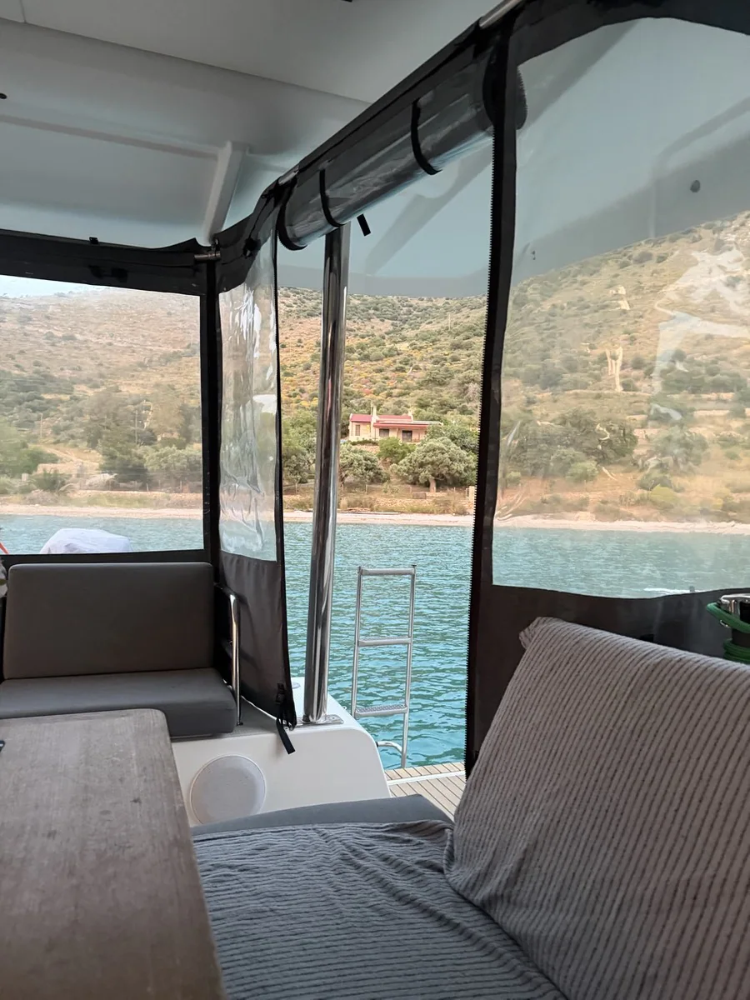
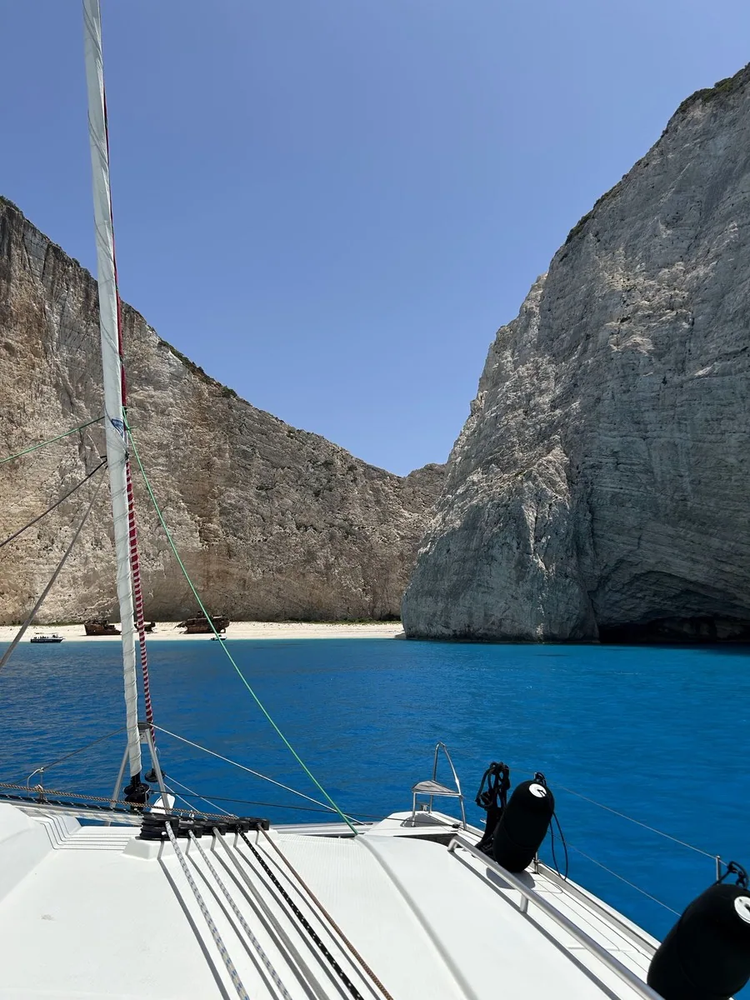
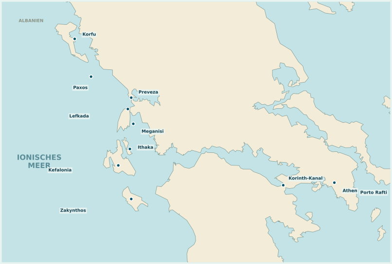

Dein Rückzugsort
Zwei gemütliche Gästekabinen mit großen Doppelbetten (ca. 160 × 200 cm), jeweils eigenem Bad mit Dusche und WC, USB und 220-Volt-Anschluss.
Entdecke die schönsten Küsten und Buchten an Bord unseres großzügigen Segelkatamarans Valeria – mit maximal vier Gästen.
Wir teilen unsere Leidenschaft fürs Segeln und laden dich ein, das Mittelmeer in entspannter, persönlicher Atmosphäre zu entdecken. Kein Massentourismus. Kein anonymes Chartererlebnis.
Zwei Gästekabinen, viel Platz zum Leben und die Freiheit, dort zu bleiben, wo es am schönsten ist.
Lerne uns kennen →Komm an Bord unserer privaten Valeria und entdecke das Mittelmeer so, wie wir es lieben: mit Zeit zum Genießen, Segeln, Baden und Entdecken.
Du wohnst in einer komfortablen Doppelkabine mit eigenem Bad. Auf dem großzügigen Katamaran gibt es reichlich Platz – an Deck, im Cockpit und oben auf dem Flybridge. Du kannst beim Segeln mitmachen oder einfach das Meer genießen. Wir planen unsere Tage gemeinsam, je nach Wetter und Lust auf neue Buchten.
Wir segeln in kleiner Runde mit maximal vier Gästen. Die Bordkasse rechnen wir transparent gemeinsam ab; auch beim Kochen und Bordleben packen alle ein bisschen mit an.

Wir laden dich auf unsere eigene Fountaine Pajot Elba 45 ein – nicht als anonyme Chartercrew, sondern als Mitsegler in einer kleinen Gemeinschaft. Auch ohne Segelerfahrung kannst du mitkommen.
Zwei gemütliche Gästekabinen mit großen Doppelbetten (ca. 160 × 200 cm), jeweils eigenem Bad mit Dusche und WC, USB und 220-Volt-Anschluss.
Sonnendeck und Flybridge mit Polstern, großzügiger Salon mit TV und Bose-Soundsystem sowie Internet auch auf See, soweit Verbindung verfügbar ist.
Badeplattform, motorisiertes Beiboot, Stand-up-Paddle, Schnorchel- und Angelausrüstung: Zwischen den Segeletappen gibt es viel zu entdecken.
Wir kaufen zu Beginn gemeinsam nach euren Wünschen ein, kochen an Bord oder gehen in kleine Tavernen. Die gemeinsamen Ausgaben rechnen wir transparent über die Bordkasse ab.
Bei uns sind insgesamt höchstens sechs Menschen an Bord: wir beide und maximal vier Gäste. Route und Tagesablauf stimmen wir mit der Crew ab – immer mit Blick auf Wetter und Sicherheit. Einzelbelegung einer Kabine oder besondere Wünsche? Sprich uns einfach an.
Grüne Inseln, tiefblaue Buchten, kleine Tavernen am Wasser und immer wieder ein Ankerplatz, an dem man am liebsten bleiben würde.

Zwischen Lefkada, Meganisi und Kefalonia verstecken sich Buchten, die man am schönsten vom Wasser aus entdeckt.

Morgens ein Sprung ins Meer, nachmittags ein kleiner Hafen und abends gemeinsam essen.

Wenn die Sonne hinter den Inseln verschwindet, beginnt oft der schönste Teil des Tages.
Nicht jeder schöne Stopp steht im Reiseführer. Unsere Lieblingsbuchten entdecken wir zusammen – die genaue Auswahl bestimmt der jeweilige Törn.
Berühmte Steilküsten, die Blue Caves und die eindrucksvolle Navagio-Bucht – je nach Route, Wetter und örtlichen Zugangsbeschränkungen.
Eine schmale Wasserstraße zwischen gewaltigen Felswänden: Der Korinth-Kanal verbindet den Saronischen mit dem Korinthischen Golf. Auf passenden Überführungstörns kann diese Passage zu einem unvergesslichen Erlebnis werden.
Die Durchfahrt ist kein fester Bestandteil jedes Törns und hängt von Route, Öffnung und behördlichen Vorgaben ab.
Entdecke die Inseln und Ausgangshäfen unserer Törns. Die Markierungen zeigen mögliche Ziele, keine garantierte Route.

Auf echten Küstenlinien beruhende Übersichtskarte mit möglichen Zielen – keine Navigationskarte oder garantierte Törnroute.
Keine Stockfotos. Diese Bilder stammen von unseren eigenen Törns auf der Valeria.
Eine erste Auswahl – weitere Fotos unserer Reisen folgen.
Unsere kommenden Segelreisen. Termine und Verfügbarkeit werden laufend aktualisiert.
Termine und Preise für 2027. Verfügbarkeit bitte persönlich anfragen.
Neun ausgewählte, sinngemäß zusammengefasste positive Gästestimmen.
Persönliche Gastgeber, viel Platz und gemeinsame Erlebnisse – neun ausgewählte positive Gästestimmen.
Frage deinen Wunschtörn direkt bei uns an. Verbindliche Online-Buchungen folgen nach Abschluss der Buchungsbedingungen.
Wunschtörn aussuchen
Anfrage an uns senden
Wir melden uns persönlich
Bei uns schreibst du direkt an Herman & Valeria – nicht an ein anonymes Buchungsportal.